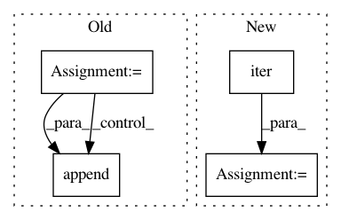

1e84cededb34347e5fd3a169b824020606f36d6c,tensorflow_datasets/core/dataset_utils.py,,dataset_as_numpy,#Any#Any#,108
Before Change
// Graph mode
// First create necessary graph ops
ds_iters = [None] * len(flat_ds)
with utils.maybe_with_graph(graph, create_if_none=False):
for i, ds_el in enumerate(flat_ds):
if isinstance(ds_el, tf.data.Dataset):
ds_iters[i] = tf.compat.v1.data.make_one_shot_iterator(
ds_el).get_next()
// Then create NumPy items
// Shared session for tf.Tensor runs
with utils.nogpu_session(graph) as sess:
for ds_iter, ds_el in zip(ds_iters, flat_ds):
if ds_iter is None:
// Tensor
np_el = sess.run(ds_el)
else:
// Dataset
np_el = _graph_dataset_iterator(ds_iter, graph)
flat_np.append(np_el)
// Nest
return tf.contrib.framework.nest.pack_sequence_as(nested_ds, flat_np)
After Change
// Merge the datasets iterators and np array
iter_ds = iter(ds_iters)
iter_array = iter(np_arrays)
flat_np = [
next(iter_ds) if _is_ds(ds_el) else next(iter_array)
for ds_el in flat_ds
]
In pattern: SUPERPATTERN
Frequency: 3
Non-data size: 4
Instances
Project Name: tensorflow/datasets
Commit Name: 1e84cededb34347e5fd3a169b824020606f36d6c
Time: 2019-01-28
Author: epot@google.com
File Name: tensorflow_datasets/core/dataset_utils.py
Class Name:
Method Name: dataset_as_numpy
Project Name: dmlc/dgl
Commit Name: 455ea48570f1af63b1270c8ccda49fbe3deb9bcc
Time: 2018-12-04
Author: ly979@nyu.edu
File Name: python/dgl/graph.py
Class Name: DGLGraph
Method Name: from_networkx
Project Name: geometalab/OSMDeepOD
Commit Name: 56c32befab08d499afaaf5749bf331b258559c4a
Time: 2015-11-04
Author: samuel.kurath@gmail.com
File Name: src/data/StreetLoader.py
Class Name: StreetLoader
Method Name: _parse_tree